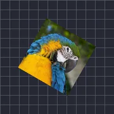

หมุน

หมุนเลเยอร์วนไปเรื่อยๆ ด้วยความเร็วคงที่ ค่าต่ำกว่าศูนย์จะหมุนไปอีกทาง
การหมุนจะหมุนเลเยอร์ไปรอบๆ ด้วยความเร็ว RPM รอบต่อนาที 60 คือหนึ่งรอบต่อวินาที ตัวเลขติดลบจะหมุนไปในทิศทางตรงกันข้าม เหมาะสำหรับวงล้อหมุน พัดลม และแผ่นเสียง
การตั้งค่า
| การตั้งค่า | ประเภท | ช่วงค่า | ค่าเริ่มต้น |
|---|---|---|---|
| RPM | ตัวเลข | -3600 ถึง 3600 | 60 |